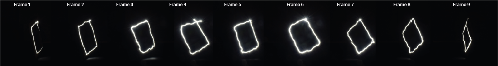

Introduction
Drawing inspiration from light painting images, this project entails programming the Franka Emika robotic arm to draw several still images of a butterfly with light to produce a stop motion animation.
Lo-Fi Beta Testing
To validate the concept, a beta test was first conducted without the robotic arm. In this experiment, a human, an iPhone torch, a template, a stand, a camera and a tripod were used.
The template was rotated at approximately 20 degree intervals through 180 degrees, pivoting on the stand. At each rotation, a long exposure image was taken on the camera and the human moved the light around the frame. Once this sequence was complete, the images were manually compiled in a video editing software to create the beta test animation.
